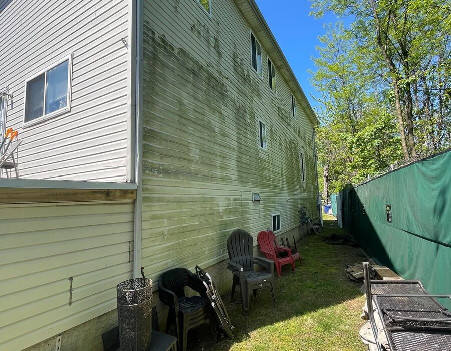
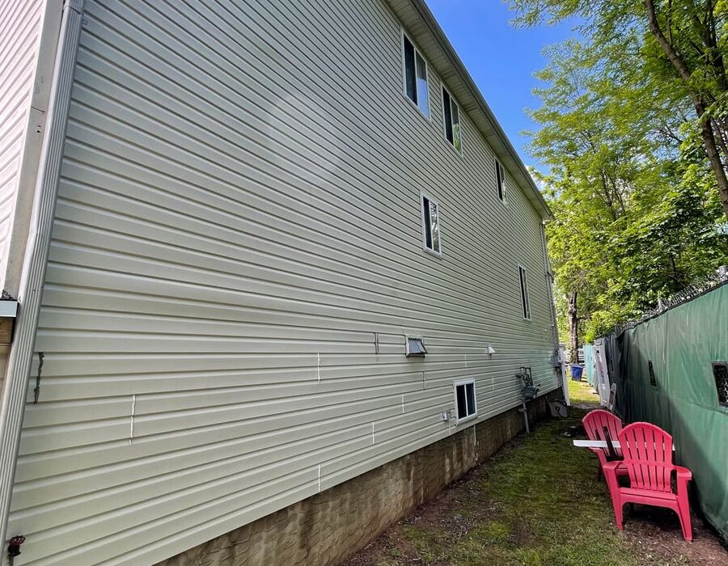
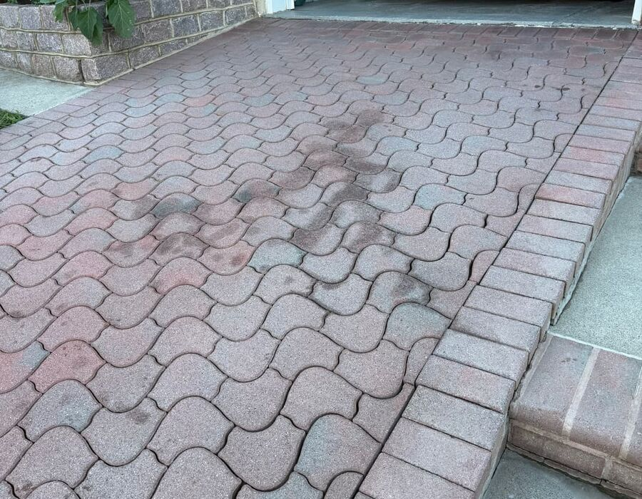
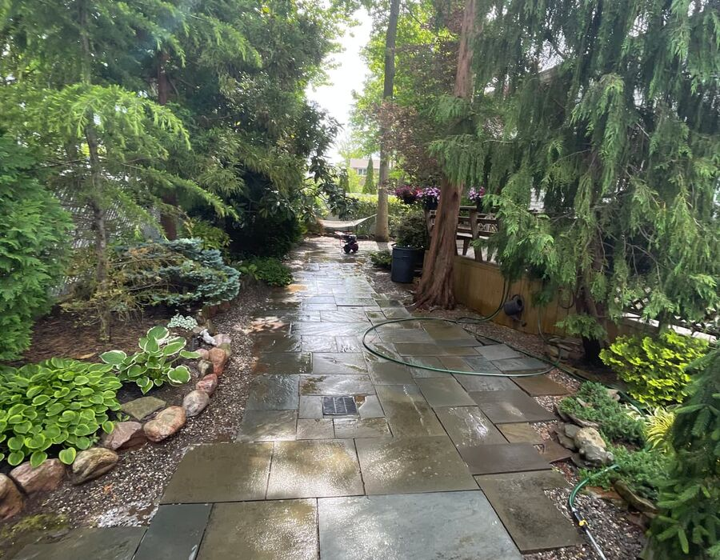

House Washing
Professional house washing to restore your home's beauty and protect your investment.
Staten Island · Licensed & Insured · Est. 2023
Fast response, careful work, and results your neighbors talk about. Power washing and soft washing for houses, hardscapes, and businesses across the borough.
What we do
Professional house washing to restore your home's beauty and protect your investment.
Remove stains, oil, dirt, and grime from driveways and walkways.
Gentle cleaning for delicate surfaces like roofs, siding, and stucco.
Restore and protect outdoor living spaces with professional cleaning.
Prevent water damage with thorough gutter cleaning and maintenance.
Professional exterior cleaning for businesses and commercial properties.
Real jobs, real results




Trusted locally
5.0★ rated across 80 Google reviews. Our work speaks for itself — see why the borough trusts us.
Read all 80 reviews on Google →Fully licensed and insured for your peace of mind on every job, residential or commercial.
Get your free estimate quickly, with same-day service available when your schedule needs it.
Your Staten Island neighbors, serving the borough since 2023. We care about this community.
Good to know
Yes, we provide pressure washing and soft washing services throughout Staten Island, including every neighborhood from the North Shore to the South Shore.
Yes, we are fully licensed and insured, so your property and your peace of mind are protected on every job.
We respond fast — most estimates are provided the same day. Call us at 917-397-0128 or request one online.
Power washing uses high pressure for hard surfaces like driveways and concrete. Soft washing uses low pressure with specialized cleaning solutions for delicate surfaces like roofs, siding, and stucco.
Yes, we provide pressure washing for commercial properties, storefronts, parking lots, building exteriors, and more.
Get your free estimate today.
★ 5.0 rated · Licensed & Insured · Fast Response